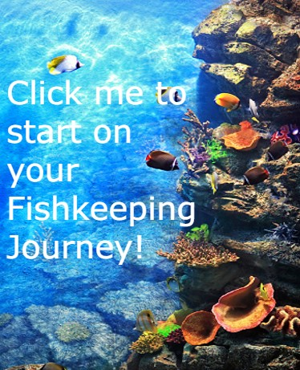
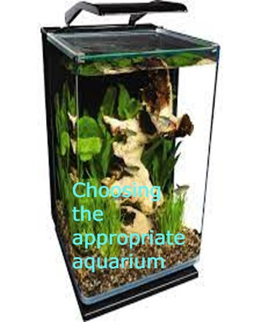
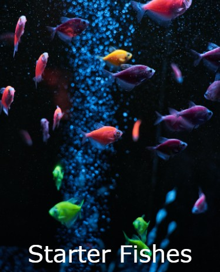
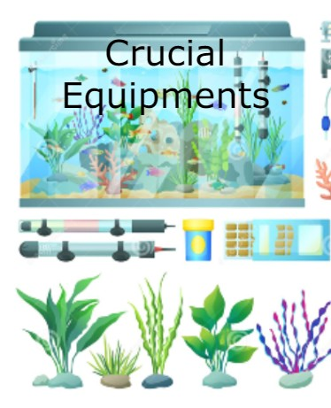

Getting Startedmore_vert
Set a Clear Goalclose
To begin with, you need to know what kind of fish and how much budget do you have. Do you want some small fishes as pets? Or do you want a monster fish in the long run. You can also choose to be both because there is never a limit to what kind of fish you will take care of.

Choosing An Aquariummore_vert
Pick a Suitable Aquariumclose
.jpg)
There are many types of aquarium out there, the only thing you should keep in mind is how much can you handle. For starters, I would recommend a display tank like the one in the picture. It is easy to clean, doesn't take much space, and most importantly, it houses your fishes.

Choosing a fishmore_vert
There's Plenty of Fish in the Seaclose
Like literally. However, we will choose starter fishes. The best ones in my opinion are molly's. Mollies are a great way to jump start your aquarium. They are resilient and very resistant to water changes. They are also not very picky on what to eat. They can grow into chonccs and they have the a variety of personalities! Other are Danios, Tetra glo-fish, and platy. Don't trust anyone who recommends guppies. They are not starter fishes.

Equipments Neededmore_vert
Equipments are also Essentialclose